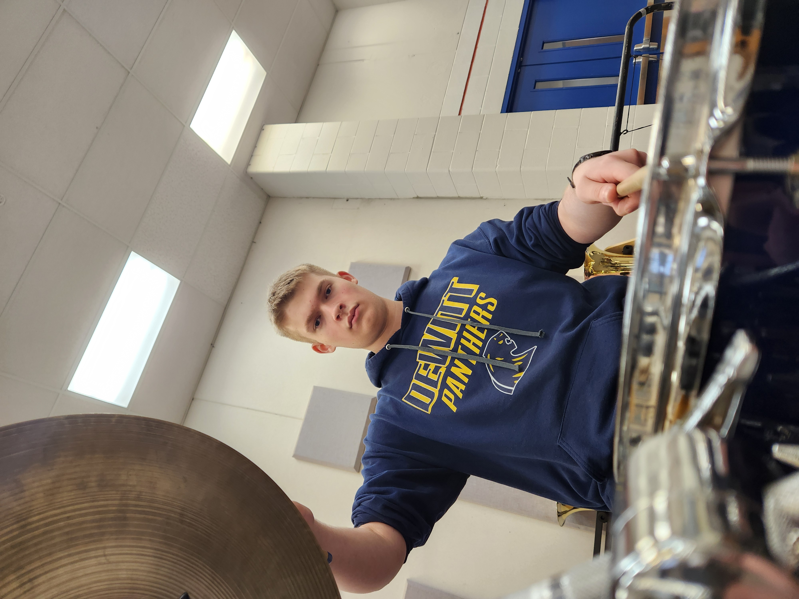

|
Armond Tavelli is the StageFright's lead singer and helped form the idea with the bassist Jace Montogmery. Armond always felt like the genre of punk rock and metal were asking to be combined, and so he met up with Jace and Brandon to formulate a band that would combine the best elements of both. StageFright was born, and the rest is history. |
| Jace "Monty" Montgomery has been in the band since day one. The resident bass player, no one is really sure what Jace does, but you can always tell if he's not playing. Band members would like to include that though Jace is always on time for rehersals, he shows up to gigs and concerts with less than 2 minutes to set up, so any delays are usually blamed on him. |
 |
|  |
Landon Thelen is StageFright's drummer. He joined a bit later in the band's journey after the previous drummer quit. When asked why he became a drummer he said, "Whiplash." and refused to elaborate further. Landon had key roles in writing, editing, and producing the band's latest album: Fear The Reaper. |
| Brandon Keefe is the Rythm guitar for StageFright. When he's not hitting power chords, you'll find him on the tennis court hitting aces across the net. Brandon joined the band back before all the record deals and fancy sponsorships, and while he was never involved in writing the music, he has always performed it with skill and precision. |
 |